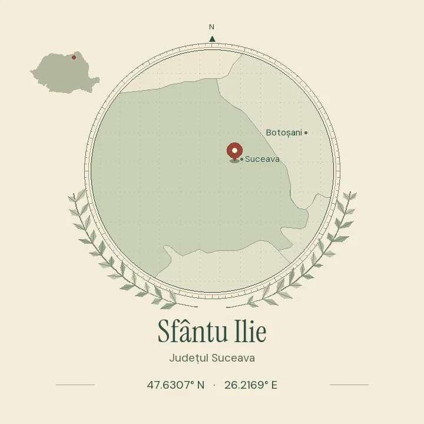

Bucovina Easy Stay
Pe Strada Dealul Crucii 64, în Sfântu Ilie, Bucovina Easy Stay este o pensiune mică, cu grădină, parcare proprie și Wi-Fi. Are doar 11 evaluări pe Google, cu media 4,5, așa că imaginea pe care o ai despre ea se sprijină pe puține păreri.
4,5 11 recenzii GoogleVreau organizare completă →
Despre Bucovina Easy Stay
Cele mai multe recenzii din 2026 laudă curățenia, gazdele primitoare și bucătăria comună dotată cu cuptor cu microunde, mașină de spălat vase, frigider și aragaz. Un oaspete spune că prețul pe noapte e mic pentru ce primești. O recenzie de o stea arată însă cealaltă față: proprietara sau mama ei locuiesc în casă, proprietatea nu se închiriază integral, iar oaspeții au fost atenționați că vorbeau afară seara, pe la ora nouă și jumătate.
Din aceste motive, locul nu pare făcut pentru petreceri. Nu există date despre evenimente găzduite aici. Dacă îl iei în calcul pentru cazarea câtorva invitați la o nuntă din zonă, întreabă câte camere sunt, dacă gazdele locuiesc în aceeași clădire, de la ce oră se cere liniște în curte și dacă grătarul și masa exterioară pot fi folosite seara.
Dacă vrei ca masa să aibă loc la o altă adresă după o eventuală cununie la Bucovina Easy Stay, poți contacta separat Mybistro din Suceava. În registrul SITUR apare ca restaurant clasic, cu 108 locuri. Între cele două puncte sunt aproximativ 3,4 km în linie dreaptă. Întreabă dacă Mybistro ar primi grupul la data dorită și în ce configurație; locurile înscrise în registru sunt pentru servirea mesei.
Santa Fe este un reper apropiat pentru cazare, la 0,8 km în linie dreaptă de Bucovina Easy Stay. În registru, Santa Fe (Sfântu Ilie) are 20 de locuri de dormit în 10 spații, iar Passa Tempo (Bulai) are 16 locuri de dormit în 8 spații. Împreună ar însuma 36 de locuri de cazare. Pentru un grup de 40 de persoane, chiar cu ambele unități libere integral, ar mai trebui găsite 4 locuri. Celălalt punct, Passa Tempo, se află la 0,9 km în linie dreaptă de locație.
Închirierea pentru evenimentul tău se verifică direct cu administratorul.
Încap toți dragii voștri?
Verifică spațiile pentru grupul tău. Numărul ales se completează și în cererea de ofertă.
Capacitate și spații
- Cununie în aer liber
- De confirmat
- Cină cu ring de dans
- De confirmat
- Spațiu pentru ploaie
- De confirmat
Pas cu pas, fără grabă
- Data și bugetulstabiliți un interval
- Locațiacomparați și salvați
- Vizionareavedeți spațiile împreună
- Ofertaverificați condițiile
- Rezervareaconfirmați în scris
Înainte de rezervare
Cât costă închirierea?
Cere o ofertă pentru data și numărul tău de invitați. Solicită separat prețul meniului, închirierea spațiului și costul variantei pentru ploaie.
Ce să întreb despre vreme?
Întreabă care este spațiul acoperit rezervat grupului tău și câte persoane pot lua masa acolo cu un ring de dans disponibil.
Pot viziona locația sau verifica accesul fără trepte?
Menționează în cerere că dorești o vizionare. Cere detalii despre drumul dintre parcare, ceremonie, mese și toalete, inclusiv pe vreme ploioasă.
Cererea îmi rezervă data?
Echipa solicită disponibilitatea. Locația îți comunică oferta, avansul și condițiile de anulare. Tu alegi dacă accepți contractul.
Cere disponibilitate și ofertă
Trimiți cererea către echipa directorului. O transmitem locației Bucovina Easy Stay cu acordul tău. Rezervarea se confirmă separat cu locația.
În versiunea de evaluare, trimiterea cererilor este dezactivată.
Alte locații din zonă
Dacă programezi două vizionări în aceeași zi, Leaganul Bucovinei se află la circa 0,9 km în linie dreaptă de Bucovina Easy Stay. Verifică traseul între cele două adrese înainte de a stabili orele.